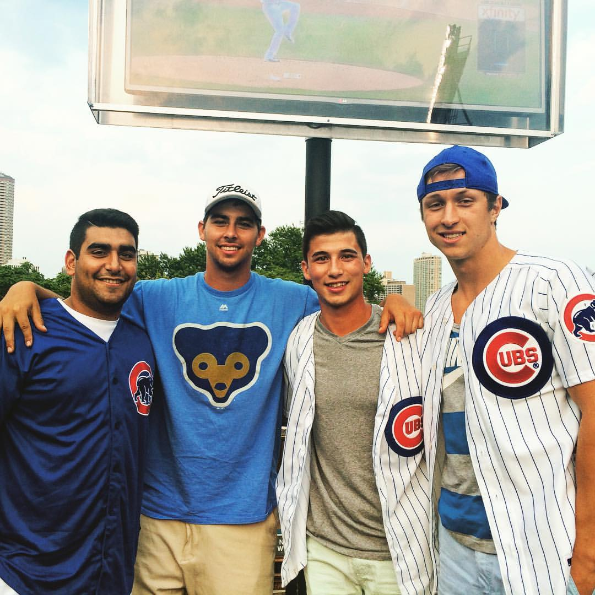
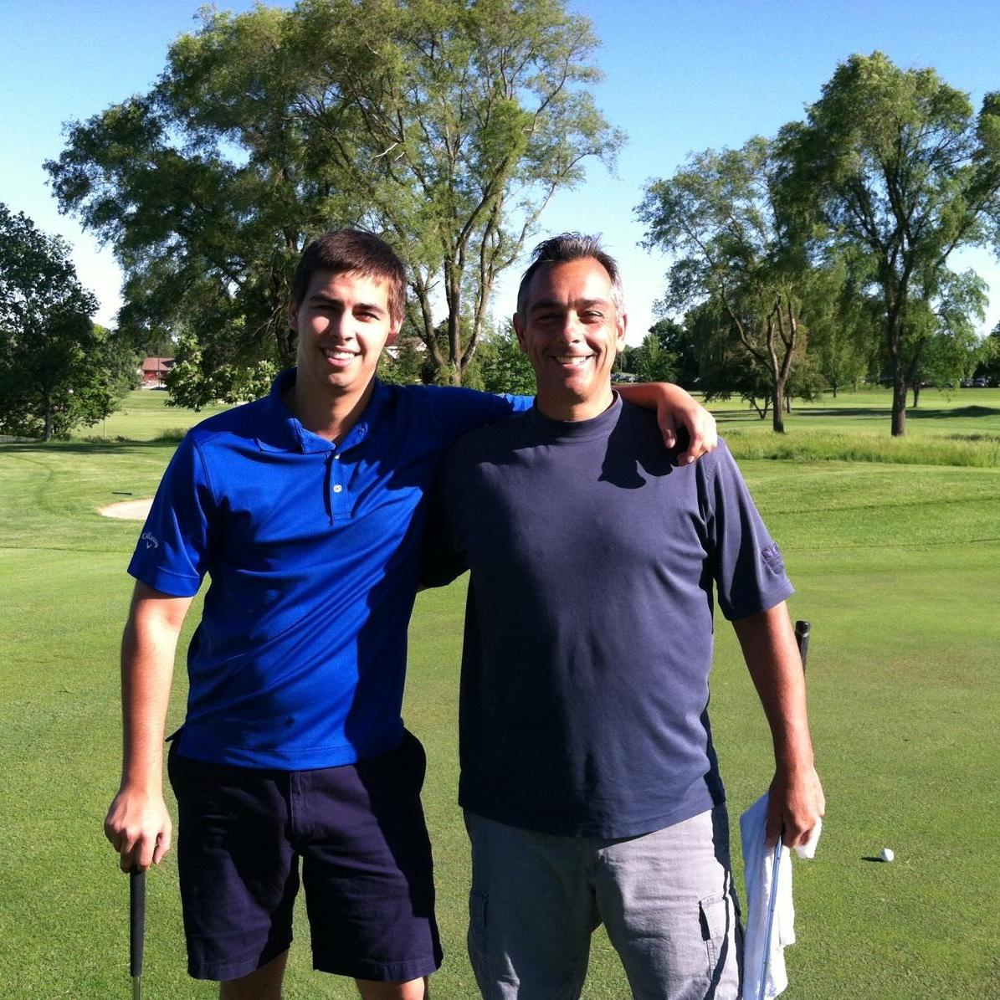

My name is Ryan Curran and I was born in June 1995. I grew up in the suburb of Schaumburg, located in Illinois about 25 minutes from Chicago. My parents were born and raised in the city of Chicago, so most of our family lives there. I decided to come to the University of Iowa after visiting my cousin Rachel my junior year of high school, and it was the best decision I ever made. At first I didn't know what I wanted to major in, so I took on school part time and gained my residency in the state of Iowa in 2014. Then I worked diligently to get accepted into the Tippe College of Business. Initially I didnt understand the difference between the B.A. track and the I.S. track, but after a semester of B.A. I decided Information Systems was more suited for me. I plan on graduating next December and hope to get a job that I am passionate about so that I can make a real difference and fully apply myself.
My ResumeIn my free time I enjoy playing Xbox (specifically the game Fortnite), hanging out with my best friends back in Chicago, golfing with my dad, spending time with my family, and most of all eating! Some of my favorite restaurants include Portillos, Lou Malnati's, Chipotle, and Five Guys! When I am at home with my friends I enjoy working out, playing basketball, and of course having some fun out on the town. I included some pictures of my friends and family at the bottom of the page!

